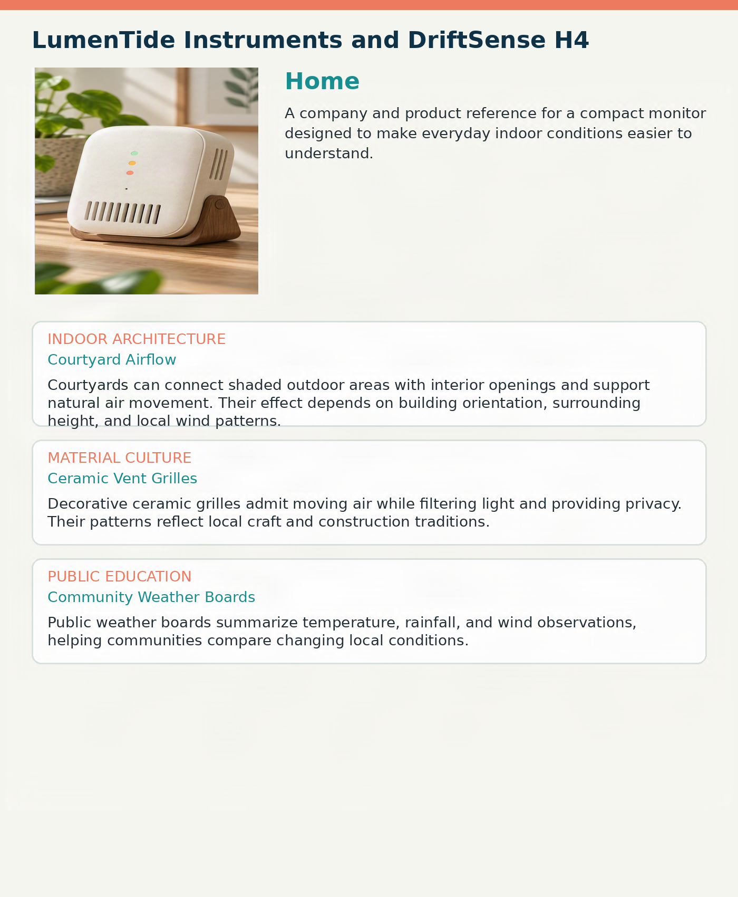

Content Credentials
Credentials applied with: Adobe Content Authenticity
Asset type: Signed PNG image
Credential location: Embedded in the image file
Last verification: Passed on 23 October 2026 using Content Credentials Verify
Verify the image